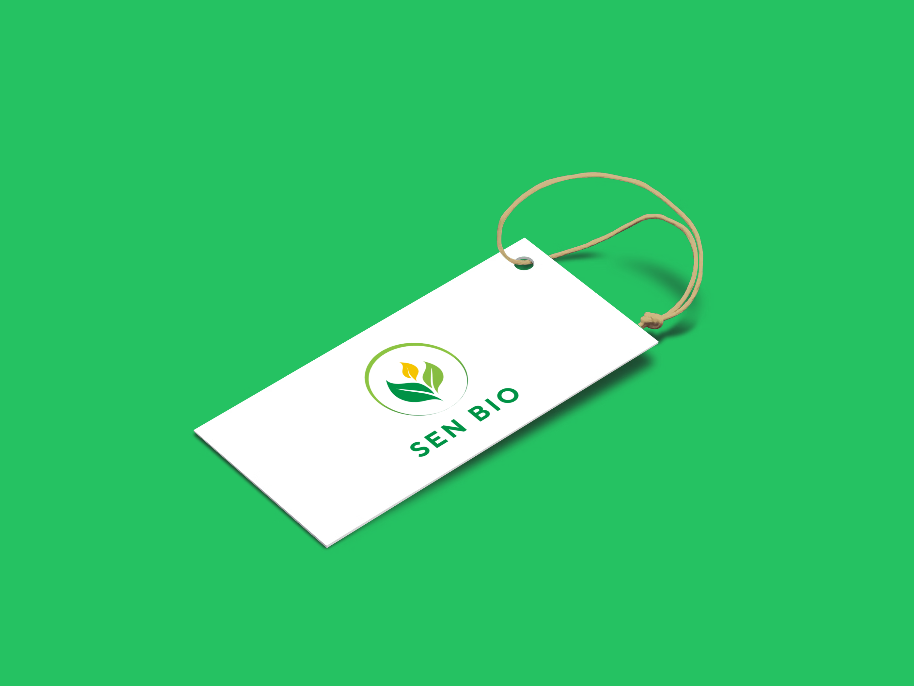
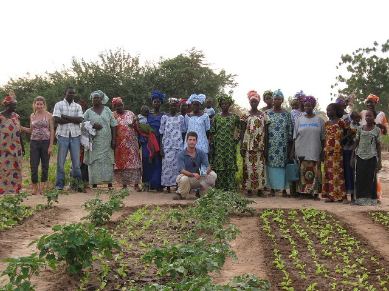

À propos de SEN BIO
SEN BIO est une entreprise sénégalaise engagée dans la valorisation des produits biologiques et locaux. Nous travaillons avec des producteurs du terroir pour proposer des aliments sains, durables et accessibles.
Nos Produits Dérivés Responsables
T-shirts offerts à nos fidèles clients
En remerciement de votre fidélité, nous offrons des T-shirts 100% coton bio floqués SEN BIO à nos clients réguliers. Un geste symbolique pour vous remercier !
Bouteilles SEN BIO
Des bouteilles en verre réutilisables pour nos jus naturels : Bissap, Gingembre, Bouye… Un emballage éco et pratique pour consommer responsable.
Sachets en papier écologique
Nous remplaçons le plastique par des sachets en papier kraft recyclé pour emballer vos céréales, fruits secs et tisanes. Zéro déchet, 100% local !
Notre Engagement
Depuis 2024, SEN BIO œuvre pour une agriculture respectueuse de l’environnement. Nous misons sur des circuits courts, une rémunération équitable des agriculteurs et une qualité nutritionnelle optimale.
Nos Valeurs
- 🌱 Authenticité : Des produits purs et enracinés dans le terroir sénégalais.
- ♻️ Écologie : Des emballages biodégradables et réutilisables.
- 👫 Proximité : Une relation directe avec nos clients et partenaires locaux.
L’équipe SEN BIO
Derrière chaque produit se cache une équipe passionnée : producteurs, logisticiens, artisans, communicants… Tous unis pour un objectif : faire rayonner le bio sénégalais !
Ce que disent nos clients
Fatou D.
J’ai reçu un T-shirt gratuit après ma 4e commande ! En plus les jus sont délicieux.

Mamadou C.
Les sachets en papier sont solides et pratiques. Merci pour cette initiative écolo !
Awa K.
Une entreprise sérieuse, locale, et engagée. Je recommande SEN BIO à tout le monde !